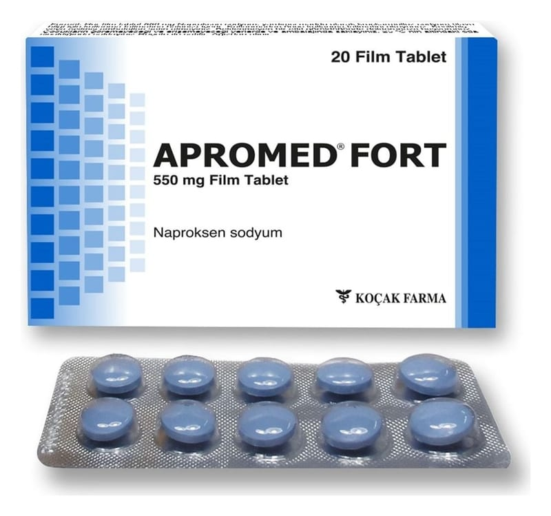

Apromed Fort 550 mg Film Kaplı Tablet, 10 Adet

Ne için kullanılır
KT · Bölüm 12. APROMED FORT’u kullanmadan önce dikkat e dilmesi gereke nler 3. APROMED FORT nasıl kullanılır? 4. Olası yan e tkiler nelerdir? 5. APROMED FORT’un s aklanması
Başl ıkları yer almaktadı r.
• APROMED FORT n edir ve n e için kullanılır? • APROMED FORT, mavi renkli, düzgün yüzeyli, bir yüzü çentikli her iki yüzü bombeli, oblong film kaplı tabletlerdir. • APROMED FORT, 10 ve 20 tabletlik PVC/Aluminyum folyo blister ambalajlarda sunulur. • APROMED FORT, ağrı ve iltiha ba etkili (NSAİ) ilaçlar grubundan ağrı kesici etkilere sahip bir ilaçtır.
APROMED FORT;
• Travma ve ya diğe r durumlara bağlı olarak or taya çıkan eklem kıkırdağının ha rabi yeti, ağrı ve f onksiyon kaybıyla karakterize e klem iltihabı, • El ve ayak ekl emlerinde gelişen ağrılı eklem iltiha bı,
• Özellikle omurgada gelişen romatoid artrit benz eri bir hastalık olan ankiloz an spondilit,
• Proteinin pa rçalanmasında ki bir soruna bağlı olarak bağ dokusu ve ekl em kıkırdağında gözlenen şiddetli ağrı (akut gut) gibi romatizmal hastalıkların tedavisinde iltihap giderici ve ağrı kesici olarak, • Akut kas iske let (kemik) sistemi ağrılarında, • Kadınlarda a de t sancılarına bağlı ağrılarda ağrıyı ke smek amacıyla, • Ortopedik ve cerrahi ameliyatlarda ağrı kesici olarak,
kullanılır.